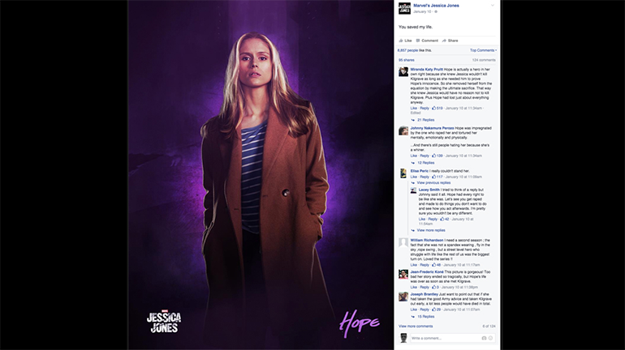
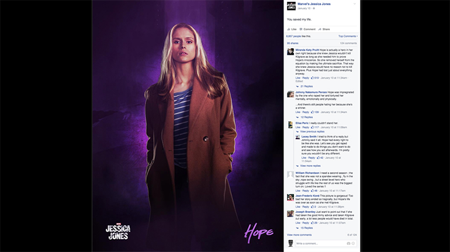

Visit Site

Given that Jessica Jones is a truly unique and lesser-known hero of the Marvel Universe, our goal was to pique the interest of a broad and brand new audience. Our strategy: Highlight the show's mystery, darkness, and sexuality, and leverage our cast of dynamic women, the men who have their backs, and the haunting villain that threatens to end them all.


Netflix and Ignition partnered to bring this anti-social character to life on social through assets as compelling and edgy as Jessica herself. Through 3D neon character signs, motion quote cards, custom in-world stills, and vintage poster-inspired artwork, Jessica Jones kept her new and growing fanbase riveted and ready for more.


 
